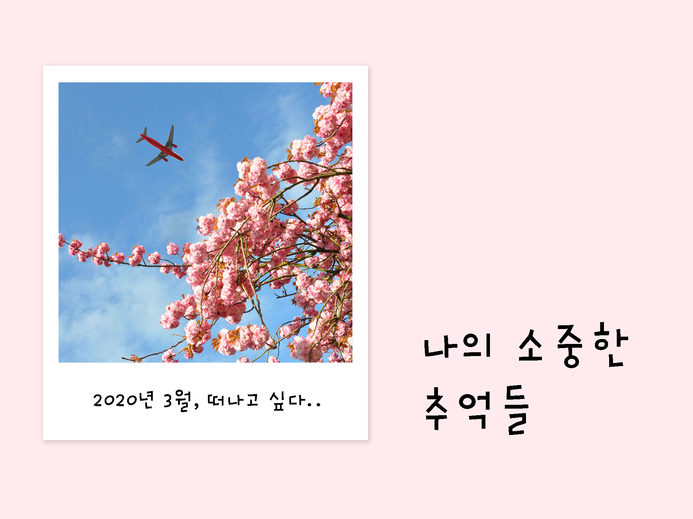
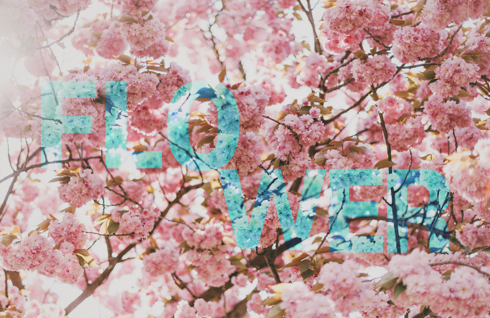
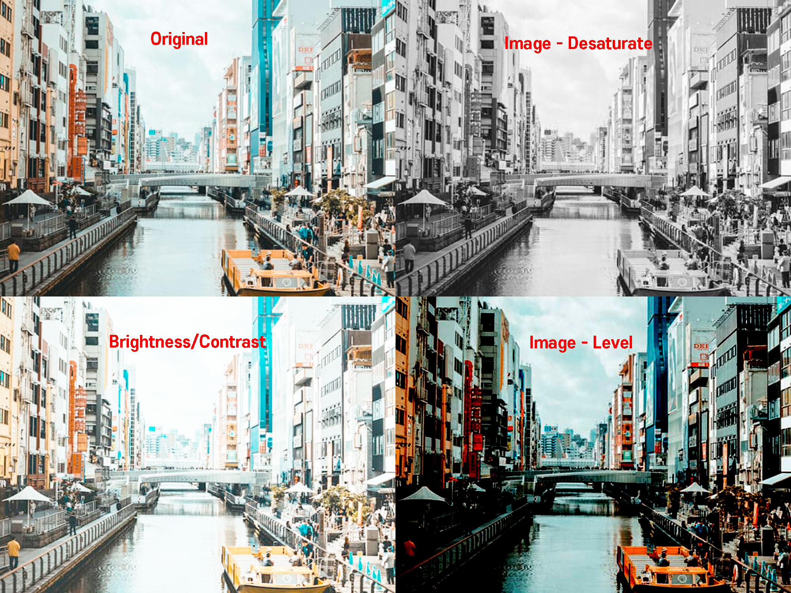
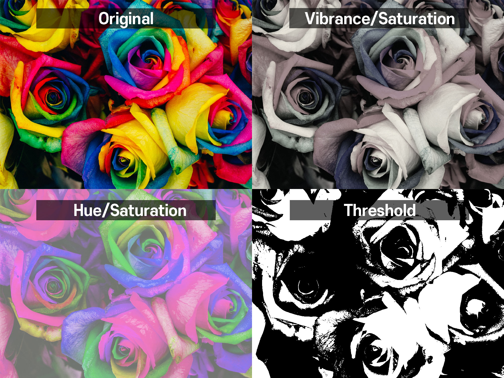
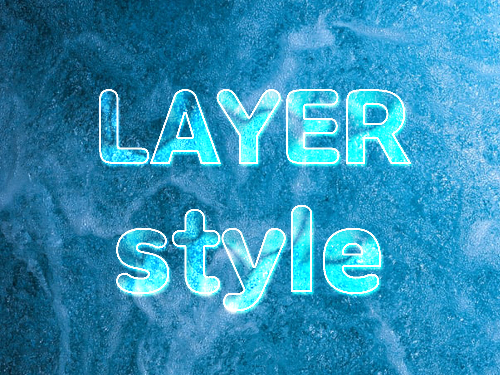
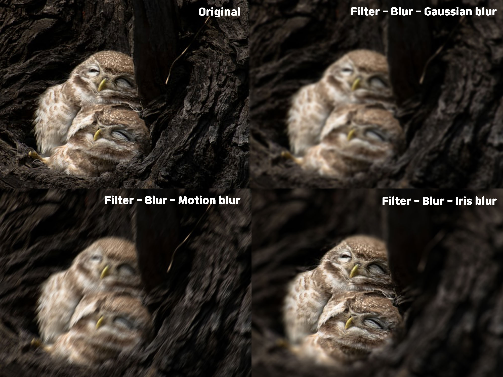
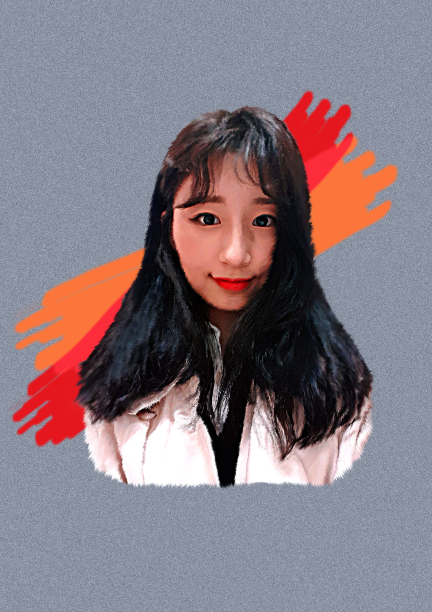

Photoshop Cheetsheet
단축키
- Ctrl + N : 새 파일 만들기
- F7 : 레이어 패널 표시/숨기기
- F8 : 정보 패널 표시/숨기기
- Ctrl + Z : 이전 취소
- Ctrl + O : 이미지 불러오기
- Ctrl + 1 : 100% 비율로 조정
- Ctrl + "+" : 확대
- Ctrl + "-" : 축소
- Ctrl + K : 환경설정
- Ctrl + T : 크기변경
- Ctrl + R : 줄자보기
- Ctrl + J : 레이어 복사
- Ctrl + E : 텍스트를 하나의 이미지로 변환
- Ctrl + U : Hue/Saturation - 색조와 채도
- Ctrl + ";" : 줄자 한번에 없애기
- Ctrl + Del : 전경색 뒤에 있는 색으로 배경 채우기
- Ctrl + Shift + I : 선택영역 반전
- Ctrl + Shift + U : 흑백 설정
- Alt + Del : 전경색으로 배경 채우기
- Rectangle tool 단축키 : U
- 스포이드 단축키 : I
기타
- 색상표 볼 수 있는 사이트 : https://materializecss.com/color.html
- 이미지 테두리 만들기 : 레이어창 하단에 Fx - stroke - size/color 조정
- [Window] - [Arrange] - [3-up Vertical] : 작업 창 정렬하기
- 격자에 맞춰서 도형넣는법 : View-snap(ctrl+shift+;)
- 색이 단순할때는 gif로 저장하는게 좋다.
상업적으로 사용 가능한 사이트들
클리핑 마스크
레이어 마스크
색상모드 효과
Adjustments 효과
Layer Style 효과
Blur 효과
Smudge 효과
Smudge 효과 넣는 방법
- 이미지를 펜툴로 따고 배경컬러를 넣는다.
- 배경에 Filter - Noise - Add Noise - Amount : 15% / Gaussian(좀 더 진해짐) - Monochromatic(단색으로 표현) 효과를 준다.
- 배경에 Filter - Blur - Gaussian Blur 1.5Pixels 효과를 준다.
- Smudge 효과를 주기 위한 이미지를 선택 후 Ctrl + L - 13 / 0.59 / 221 수치를 넣어준다.
- Ctrl + U - Hue : -2 / Saturation : 28
- Filter - Sharpen(선명도) - Unsharp Mask - Amount : 123% / Radius : 7.7 Pixels
- 브러쉬 선택 후 강도 30% - Smudge 효과를 넣어준다.